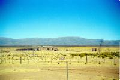
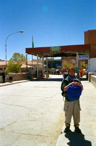
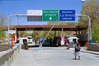
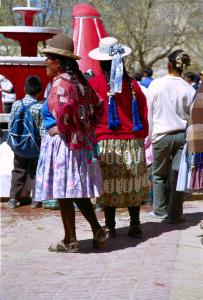
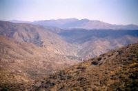

|
Vendredi 21 septembre
Peut-être que de l'autre côté du globe ça commence à cailler, mais ici, c'est
aujourd'hui le printemps. Le soleil est là pour le souligner et même si le début
de la matinée était un peu frais, ça ne met pas longtemps à se réchauffer et
nous, on ne met pas longtemps à se retrouver en T-shirt. On se lève vers 8h00
pour être sûrs de ne pas rater notre bus. Il s'agit de ne pas le louper, c'est
le bus qui nous emmène de l'Argentine à la Bolivie. Finalement, le bus
n'arrive qu'à 10h00. Une heure de retard, ça n'est pas grand chose, masi c'est
un peu surprenant en Argentine, ce pays où heures de départ et d'arrivée ont
été respectées à la minute presque chaque fois.
La vallée est toujours aussi belle, toujours aussi encaissée, toujours aussi
colorée et toujours aussi recouverte de cactus. Et puis, de temps en temps,
on se retrouve non plus dans le fond d'une vallée mais dans d'immenses plaines,
sur des plateaux plantés d'herbe sèche jaune, de petits arbustes et où courent
des lamas. Parallèlement à la route, de chaque côté, une chaîne de montagnes.
C'est l'altiplano. On passe à Humahuaca, à 3000 mètres d'altitude. Puis on arrive
à La Quiaca, la ville frontière du côté argentin. Du terminal des bus, il y
a une dizaine de minutes de marche pou atteindre le poste frontière. Une minute
suffit au douanier pour mettre dans nos passeports le tampon de sortie du pays.
Quelques mètres supplémentaires et nous voici au poste bolivien. Entre els deux,
des dames en costume traditionnel passent avec des cabas pleins. Des deux côtés,
des camions chargés de sacs attendent pour franchir la douane. Nous, on remplit
un papier "classique", nom, prénom, numéro de passeport, ville d'entrée dans
le pays... Un tampon, et ça y est, on est accepté. On a le droit d'entrer en
Bolivie.
La ville bolivienne en face de La Quiaca s'appelle Villazon. On a lu dans le
guide qu'il y avait beaucoup de va et vient et que femmes et enfants importaient
des denrées rares d'Argentine en Bolivie. Aujourd'hui, sans doute à cause de
la crise, le mouvement semble s'effectuer dans l'autre direction. Les rues de
Villazon re gorgent de tout, piles, produits d'entretien, nourriture, savon...
et puis dans la rue qui mène à la frontière, il y a au moins 5 ou 6 magasins
qui développent les photos pour 5 ou 6 dollars, deux fois moins cher qu'en Argentine
(et ça tombe bien, on a 8 pellicules à développer!).
Depuis le terminal de bus, il y a seulement deux destinations assurée: Potosi,
oú l'on ira plus tard, et Tupiza sur la route d'Uyuni. En attendant notre bus,
on observe sur la place de ce gros bourg une fête apparemment étudiante. Tout
le monde danse au rythme des haut-parleurs installés devant l'église. Quand
la musique s'arrête, la fontaine de la place devient l'occupation principale.
Tout le monde jette tout le monde à l'eau. Et le tout devant le regard des adultes
qui trouvent cela très drôle, en particulier les femmes dans leurs habits traditionnels
(jupe au-dessus du genoux gonflée par plusieurs jupons, chapeau et longues tresses
nouées dans le dos).
On part à 15h00, vers 18h00 on arrive à Tupiza. Là, on apprend que le bus qui
doit nous mener à Uyuni demain ne part que... lundi. Que faire? On trouve un
hôtel ou plutôt, c'est lui qui nous trouve. Une ribambelle de gamins sans doute
commissionnée nous y amène. L'hôtel est vraiment bien fichu, propre et super
professionnel. A peine arrivés, on essaie de nous vendre un tour en 4x4 pour
visiter les montagnes aux alentours. Un peu déçus tout de même, on pensait arriver
dans un pays un peu moins organisé au niveau du tourisme. Sinon, Tupiza est
une petite ville à 2900 mètres d'altitude, avec un marché couvert plutôt sympa
et bien achalandé. En ce qui concerne notre trajet, on a décidé d'aller à Sucre,
en passant par Potosi. Cette ville-là même qu'on pouvait joindre par la frontière,
pas grave, on a vu du pays.
Samedi 22 septembre
On croyait que le bus était à 9h00 alors on a mis le réveil à 7h45. En fait,
il est à 10h00, on a un peu d'avance. Et comme on a oublié de se mettre à l'heure
bolivienne, le réveil a en fait sonné à 6h45. On a beaucoup d'avance...
Le début du trajet entre Tupiza et Potosi est sympa. Les paysages sont similaires
à ceux de la route qui nous a menés à Tupiza. Les montagnes sont rouges, découpées,
on est au milieu des vallées encaissées, au milieu des cactus. Ceux-ci sont
un peu moins hauts, mais ils ont une forme terrible, une sorte de tronc, et
de là dix ou vingt branches qui s'élèvent et essaient de se faire une place.
A tout moment on attend une attaque d'indiens ou de cow-boys tant le décor semble
sorti d'un western. D'ailleurs Marion a vu Lucky Luke et les Dalton... Et puis,
les montagnes perdent un peu de leur charme, la végétation devient plus monotone,
de l'herbe, des arbustes. Vers 18h00, on est bien content d'arriver à Potosi
et de quitter cette route non goudronnée et poussiérieuse.
On est cependant pressé de reprendre le bus! Demain, il y a un marché réputé
à côté de Sucre. Mais ici, contrairement à ce que tout le monde nous avait dit,
le dernier bus était à 17h00 et non 19h00. On se regarde tout bête, planté devant
le bureau oú la dame vend des billets pour Sucre et essaie de nous convaincre
que demain, c'est tout bon, qu'en partant á 7h00, on arrivera à 10h00 à Sucre
et qu'on pourra prendre le bus pour le marché. Mais ce bus, d'après notre guide
part à 6h00 du matin! Alors non, on ne va pas tenter le coup. Il nous aura fallu
à peine deux jours pour nous rendre compte que les gens inventent des correspondances
à leur bus. C'est décidé, on reste à Potosi, tant pis pour le marché.
Et puis, alors qu'on s'apprête à partir pour le centre ville, un bus s'arrête.
Un gars, sa femme et leur enfant y sont installés et viennent nous accoster.
Apparemment, à eux trois, ils forment leur compagnie de bus et nous proposent...
de nous emmener à Sucre. C'est parti. Sur la route, la dame du bus demande à
un passager de noter les noms de chacun. Arrive notre tour, tout le monde nous
regarde. Quand on lui demande le papier pour écrire nos noms nous-mêmes, tout
le bus se marre... A 23h00, on arrive et on trouve tout de suite une chambre.
Dodo bien mérité.
Suite du voyage : Sucre
|

Argentine
La Quiacaca
|

Argentine
La Quiaca
|

Bolivie
Villazone
|

Bolivie
Tupiza
|

Bolivie
Tupiza
|
|
|